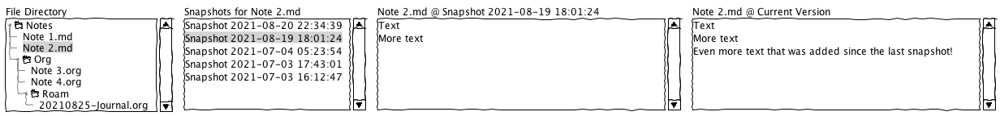
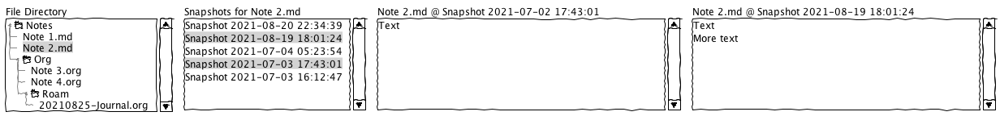
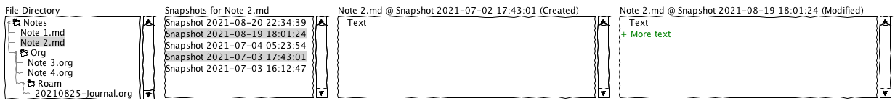
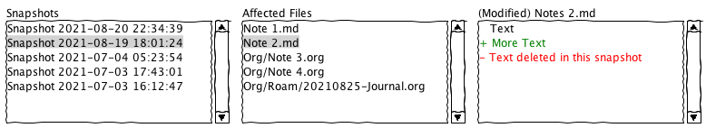

Design Document
Table of Contents
1. Design Document for SnapRev
1.1. About this document
I have never done anything like this before, most of my experience has been in coding small throw-away scripts. The scale for this program, while narrow and defined, is bigger than anything else I’ve done yet. As such, it requires me to put forethought into its design. This document is meant to assist in that. I expect it to be constantly changing and perhaps becoming obsolete.
1.2. Problem Statement
1.2.1. Background
I keep a collection of plain-text notes, mostly in Markdown and Org. They include daily and periodic journals. While pictures are occasionally added, it is mostly plain-text. They are synchronized between multiple laptops and desktops. Notes are not only added, but existing notes are modified and deleted when appropriate. I find it very useful to be able to keep track of changes and be able to revert to past versions if needed. With no version control, I cannot view or revert changes to notes. While there are a number of solutions for version control, they tend to solve similar problems but don’t entirely fit my use case.
1.2.2. Requirements
- Must have:
- Workflow:
- Select a file from a list of files or directory tree -> view all snapshots where that file was modified
- Select one or two snapshots and view both the diff and the two whole files side-by-side
- If only one snapshot is selected, then compare the snapshot version to the current version
- If two snapshots are selected, compare them to each other
- Option to open both versions in an external program, such as Meld, diff, vimdiff, etc.
- Select one or two snapshots and view both the diff and the two whole files side-by-side
- Select a snapshot from a list of all snapshots
- View a list of all files affected by that snapshot
- Select a file from that list -> View changes to that file
- Option to open diff in external program like Meld, diff, etc
- Select a file from that list -> View changes to that file
- View a list of all files affected by that snapshot
- Select a file from a list of files or directory tree -> view all snapshots where that file was modified
- Features:
- Cross-Platform (I use Mac, Linux, Windows, BSD occasionally, etc)
- Separate from my editor (thus able to use multiple editors)
- But able to integrate easily into my editor workflow
- Being able to easily copy/paste text from the side-by-side or diff is acceptable to me
- Workflow:
- Nice to have:
- Native vs web doesn’t matter for this, but should be fast and light (enough)
- Language/tools: I want it to be interesting to me. I do this for self-gratification. Rust, Lisp/Scheme, C#, Kotlin are possibilities.
- Modular architecture - Use multiple backends, like git, zfs, btrfs, borg, etc.
- Incremental changes on disk - that way I don’t have multiple full copies of a file each time it’s changed
1.2.3. Currently
There are a number of solutions I have investigated and/or tried.
- Syncthing File Versioning
- Rudimentary file versioning.
- Unfortunately versioning GUI integrated in the web window
- Only keeps track of when another peer changes a file, and only stores the current version before being overwritten
- Copies whole file instead of diff/only changes
- Git Clients
- Sublime Merge
- Servicable but not meant for the above described workflow, and I don’t know how to configure it for that.
- Meant for codebases with meaningful commits, not “note snapshots”
- Gitea
- Using it for the above purpose is like a computer-programmed multi-bit 1000ft-lb impact to unscrew a headlight fastener. Incredibly useful, but not the right tool.
- Github
- Same as Gitea
- Gitlab
- Haven’t tried it
- Git-this or Git-that or…
- Same. Haven’t explored them all, but just cannot find anything meant for this use case!
- Sublime Merge
- Obsidian Snapshots
- Works well for my use case!
- Unfortunatly I have no idea where the backups are located or in what format. Cannot find documentation on it!
- Therefore cannot sync snapshots between computers
- Obsidian Sync does keep snapshots
- Subscription only
- Limited to 4GB (notes + snapshots)
- Integrated in Obsidian and requires a few menus to get to
1.2.4. Synpsis
I know I cannot be the only person who wishes for a program like this. There’s probably one that was written 30 years ago that does exactly this. However, I am itching for a software project to build. This is a very good candidate.
- It is not overly complex
- Many of the problems needed for this to work have been solved in many ways (versioning, diff viewing, etc)
- Well-defined narrow scope. It is not a “do everything” program. Ideal circumstances for a novice to start, design, and complete a project.
2. Overview
2.1. UI Mockups
2.1.1. Viewing by File

Figure 1: File Snapshot Version and Current Version Side-by-Side, Raw Mode

Figure 2: Two File Snapshots Side-by-Side, File Contents Displayed in Raw Mode

Figure 3: The same as Above but File Contents Displayed in Diff Mode
2.1.2. Viewing by Snapshot

Figure 4: Affected Files by Snapshot, File Content Diff